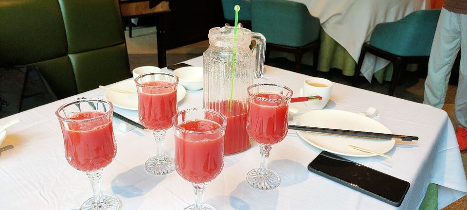
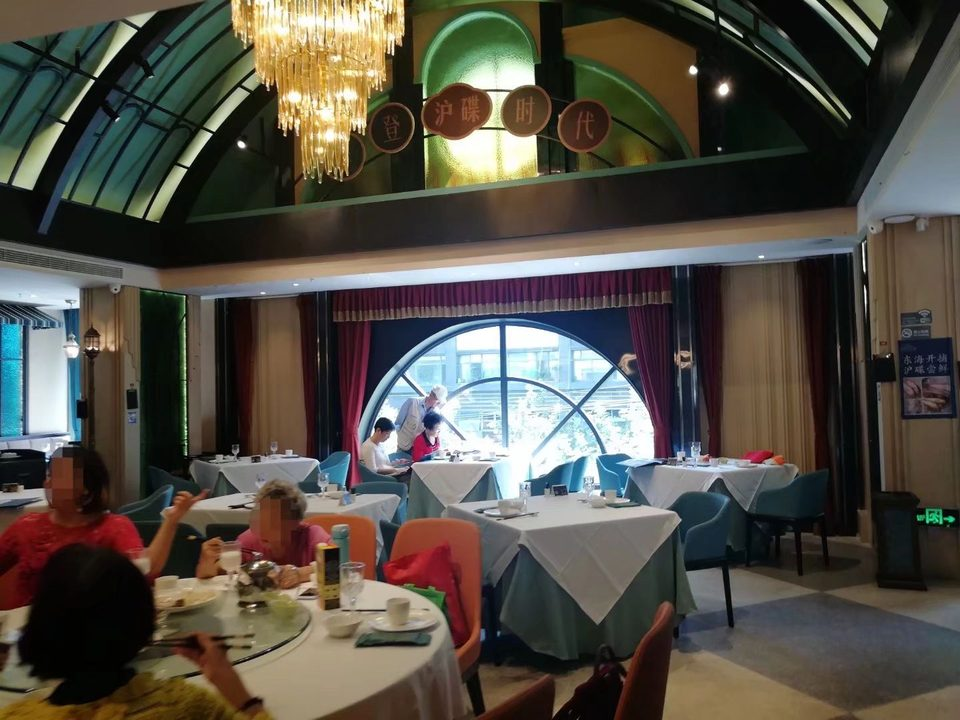

Hudie · Modeng Shidai (Modern Times, Hongkou) 沪碟·摩登时代 (虹口店)
Shanghainese · Hongkou
CheckedRatings and hours read · 11 Nov 2026

Pick the sliced roast duck, served two ways, in a retro dining room near Luxun Park.
Good to know
A Shanghai restaurant with retro decor, near Luxun Park in Hongkou.
What to order
Sliced roast duck served two ways 片皮鸭两吃
What was checked, and what was not
Read on 11 Nov 2026
Dianping 4.7 from 6,059 reviews, read on 11 Nov 2026. Amap 4.7 from 117 reviews, read on 11 Nov 2026. Second source: Amap. Exact branch, 甜爱支路24-50号 301-302 (Hongkou). Amap's own users, independent of Dianping. Ctrip lists the same rooms (4 reviews, too few to count). Must-Eat List 2 yrs running.
Not checked
No closure was found, which is not proof that the place is open, so check before you go. Hours, prices and availability were not confirmed with the venue.